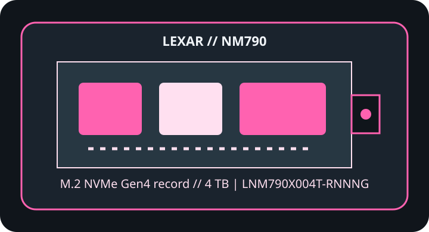

[ IDENTIFIED PRODUCT // PCIE 4.0 NVME ]
Lexar NM790 4 TB
4 TB M.2 2280, single-sided SSD identified by the complete manufacturer part number below. Capacity, heatsink, interface mode and regional suffix can change specifications; do not transfer ratings from a neighboring SKU.

SKU IDENTIFICATION: Lexar NM790, 4 TB, part number LNM790X004T-RNNNG. Verify the complete label, hardware revision and firmware before installation.
Manufacturer-identified specifications
| Product / exact MPN | Lexar NM790 4 TB (LNM790X004T-RNNNG) |
|---|---|
| Capacity / form factor | 4 TB; M.2 2280, single-sided. |
| Interface / host lanes | PCIe 4.0 x4; NVMe. Published maxima require the compatible host generation and lane configuration; an older or lane-shared host can negotiate lower throughput. |
| Controller | Not disclosed in the Lexar product references cited. |
| NAND | 3D TLC NAND (Lexar product specifications). |
| Sequential performance | Up to 7,400 MB/s sequential read and 6,500 MB/s sequential write. Vendor-rated figures apply under manufacturer test conditions, not as guaranteed sustained real-world results. |
| Endurance / warranty | 3,000 TBW; five-year limited warranty (Lexar product specifications). |
| Thermal package | Operating temperature: 0–70 °C (Lexar product specifications). Bare drive; verify the host’s thermal-pad placement and heatsink clearance before fitting. |
Firmware, host compatibility & thermal cautions
- Use Lexar’s product support and setup material for model identification; check Lexar support for firmware applicability to the complete SKU and hardware revision.
- A PCIe 4.0 x4 NVMe M.2 2280 host is required for rated throughput; verify BIOS/UEFI and operating-system NVMe support, shared lanes, and PS5/desktop heatsink fit if used in a console.
- Check M.2 keying, slot length, single-/double-sided clearance, lane sharing, and system BIOS/UEFI support in the exact host manual; M.2 shape alone does not prove NVMe or boot compatibility.
- Follow the drive and host maker’s heatsink and thermal-pad instructions. Keep airflow around the controller area, do not stack thermal materials or remove factory labels/cooling without explicit guidance, and expect sustained performance to vary with temperature and workload.
- Shut down and remove standby power as instructed before installation; use ESD precautions. Back up data and retain recovery media and encryption keys before changing storage or updating firmware.
Manufacturer product, specification & service references
- Lexar NM790 — manufacturer product pageManufacturer source for product identity and the product-specific specifications referenced above.
- Lexar NM790 — manufacturer setup sheetSecond manufacturer source for technical documentation, product support or model features.
Ratings are included only where published by the manufacturer in the linked product references; undisclosed controller/NAND details and capacity-specific values are not inferred. Firmware availability and revisions can change; verify against the physical model and host before service.